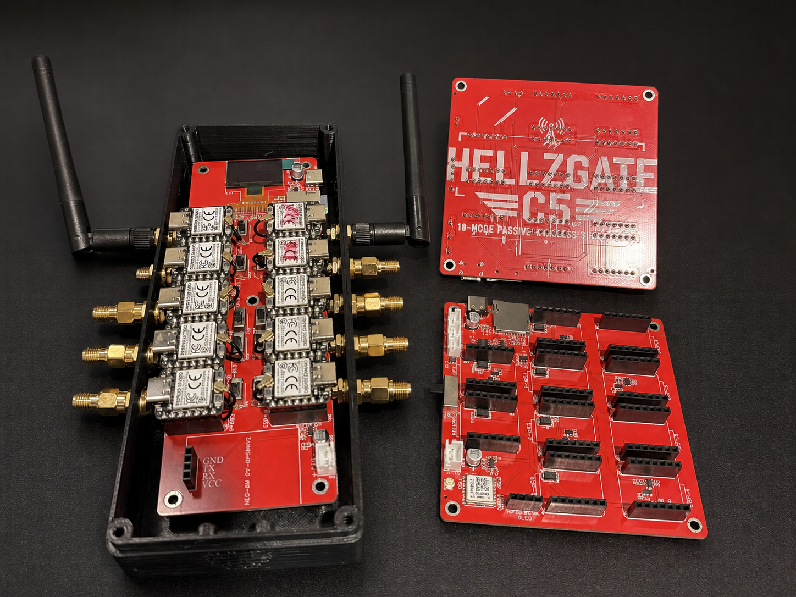

Curiosity built it.
Testing moves it forward.
I’m Sean Clossey—Hellz. HellzGate brings together my work on wireless survey hardware and physical and network penetration testing.
Connect with Sean on LinkedIn ↗THE STARTING POINTOne radio was
One radio was
never enough.
The hardware project started with a question: what if a cluster of radios could work together and report to one place? That idea became a breadboard, engineering prototypes, and the FullGate design.
The approach is simple: build it, take it into the field, and check the results. A promising test is a reason to keep investigating—not a reason to call development finished.

BUILDING IN THE OPENShare what works.
Share what works.
Keep learning.
The ESP-NOW cluster firmware is available as an open-source beta for community experimentation and feedback. FullGate hardware and app integration remain in development.
Explore the public firmware ↗Read the development notes →LET’S TALKHave something
Start a conversation ↗